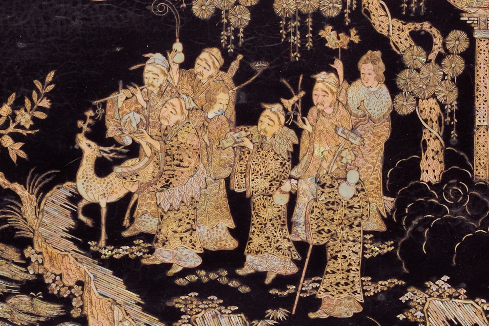

Kínai Istenségek
A nyolc halhatatlan
A Ba Xian (八仙) vagy nyolc halhatatlan kínai hősök legendás csoportja, akik a gonosz legyőzéséért küzdenek. Mesés népi ikonokként írták be magukat a popkultúrában.
Hol él a Nyolc Halhatatlan?
A Nyolc Halhatatlan a Penglai-hegyen él, amely egy paradicsomi szigeten található a Bohai-tenger közepén, amelyet csak ők érhetnek el.
Emberek voltak valaha a Nyolc Halhatatlanok?
Mind a nyolc halhatatlan halandó emberként kezdte az életét, akik jámborságuknak köszönhetően felmentek a mennybe, és elérték a halhatatlanságot.
A Ba Xian (八仙), más néven Nyolc halhatatlan, a kínai mitológia szerint az ókor legendás hőseinek csoportja, akik az igazságosságért küzdenek és legyőzik a gonoszt. A Tang- és Shang-dinasztiák idején népszerű nyolc halhatatlan állítólag a Bohai-tenger egy öt szigetből álló csoportján élt.
Bár mindig is fontos részét képezték a kínai szóbeli történelemnek, történeteiket először a Ming-dinasztia költője, Wu Yuantai jegyezte le.
A halhatatlanok a következőkből állnak: Cao Guojiu (曹國舅), Han Xiangzi (韓湘子), He Xiangu (何仙姑), Lan Caihe (藍采和), Li Tieguai (李鐵拐), Lü Dongbin (峳葓), 洞 Guola. 張果老) és Zhongli Quan (鍾離權). Xiangu az egyetlen nő a csoportban. Mindegyik Ba Xian-nak megvan a saját különleges tárgya, amelyből erejüket meríti. Ezt a csoportot a taoizmus különösen fontos alakjainak tartják.
Etimológia
A Bā Xiān neve a „nyolc”, a bā (八) és a xiān (仙) kínai karakterekből áll, amelyek jelentése „halhatatlan” vagy „égi lény”. A nevüket néha „nyolc dzsinnnek” is fordítják.
Cáo Guójiù (曹國舅) – Ennek a halhatatlannak a nevét szó szerint úgy fordítják: „Cao birodalmi sógor”.
Hán Xiāngzi (韓湘子) – Han Xiangzi neve azt jelenti: „Hsziang folyó Han”.
Hé Xiāngū (何仙姑) – Az egyetlen nő a csoportban, He Xiangu neve „a női mennyei lény”-nek felel meg.
Lán Cǎihé (藍采和) – Lan Caihe neve a „kék” (藍), „összegyűjt” (采) és „szelíd (和)” szavakból áll.
Lǐ Tiěguǎi (李鐵拐) – Li Tieguai nevének fordítása „vasmankó Li”.
Lǚ Dòngbīn (呂洞賓) – Lü Dongbin neve egy, a nevére jellemző karakterből áll: „Lǚ” (呂), dòng (洞), ami jelentése „lyuk” vagy „barlang”, és bīn (賓), ami azt jelenti, "látogató."
Zhāng Guǒlǎo (張果老) – Zhang (張) egy gyakori kínai vezetéknév, míg a guǒ (果) jelentése „gyümölcs”, a lǎo (老) pedig „régi”.
Zhōnglí Hàn (鍾離漢) – Zhongli Han neve a „koncentrátum” (鍾), a „távolság” (離) és a „han” (漢) karakterekből áll. A neve fordításban „a Han-dinasztia Zhonglija”.
Tulajdonságaik
A Ba Xian népszerű téma a művészetben, és a kerámiától a selyemfestményekig mindenen ábrázolták. Annak ellenére, hogy alkalmanként egyéni portrékon ábrázolják őket, leggyakrabban teljes csoportként rajzolják vagy festik őket. A Ba Xian embereit általában jáde szolgálólányok kísérik. A Nyolc Halhatatlan legismertebb falfestménye a kínai Ruichengben található Örök öröm templomban található. A Ba Xian mindegyikének vannak olyan jellemzői vagy tárgyai, amelyek megkülönböztetik őket másoktól.
- Cao Guojiu – A festményeken és illusztrációkon Cao Guojiu látható, amint egy jade táblát tart.
- Han Xiangzi – Általában fuvolát tartó vagy fuvolán játszó Han Xiangzi egy zenei csodagyerek.
- He Xiangu – Könnyű észrevenni, hogy He Xianggu művészeti alkotásban dolgozik, mert ő az egyetlen nő a Ba Xianban. Egy lótuszvirágot vagy egy sheng nevű nádpipa hangszert hord magánál.
- Lan Caihe – Lan Caihe-t gyakran gyümölcskosárral ábrázolják.
- Li Tieguai – A LI Tieguai-t könnyű észrevenni a művészeti alkotásokban. Ő az, akit vesszővel és kulaccsal ábrázolnakk.
- Lü Dongbin – A hagyományosan tudós köntösbe öltözött Lü Dongbint általában egy nagy kard tartja a kezében.
- Zhang Guolao – Általában fehér öszvéren lovagolva látható Zhang Guolao gyakran visz magával bambusz „haldobot” kalapáccsal és a halhatatlanság barackját.
- Zhongli Quan – Az alkotásokon Zhongli Quan az, aki olyan köntöst visel, amelyik felfedi a csupasz hasát és a köldökéig érő hosszú szakállt.
A Család
A Ba Xian némelyike állítólag nagyhatalmú ősi kínai tisztviselőkkel és költőkkel áll kapcsolatban. Cao Guojie a Song-dinasztia tábornokának, Cao Binnek a leszármazottja és Cao császárné öccse lehetett. Van egy huncut öccse is, Cao Jingzhi (曹景植). Úgy tartják, Han Xiangzi a Tang-dinasztia kiemelkedő politikusának és költőjének, Han Yunak az unokaöccse. És végül He Xiangu a kínai Guangdongból származó férfi lánya volt, akit He Tainak (何泰) hívtak.
Mitológia
A mítosz szerint a Ba Xian a Bohai-tenger közepén élt a Penglai-hegyen, amely egy gyönyörű, paradicsomi szigeten található. Csak a Ba Xian tudott eljutni a szigetre, mivel a körülötte lévő víz „gyenge” volt, és nem bírja el a hajók súlyát. Bár a művészetben gyakran egy csoportként ábrázolták őket, mind a nyolc halhatatlannak megvolt a maga története és mítosza.
Cao Guojiu
Cao Guojiu egykor a császári udvarban szolgált. Öccse, Cao Jingzhi szintén bírósági tisztviselő volt, de visszaélt pozíciójával, és szerencsejátékosként és korrupt tisztviselőként ismerték. Cao Guojie megpróbálta pótolni bátyja sérelmeit, és a saját pénzéből fizette ki szerencsejáték-adósságait, öccsét végül mégis hivatalosan megvádolták a hatalom megrontásával. Cao Guojie annyira zavarba jött, hogy feladta politikai karrierjét, és visszavonult vidékre, hogy taoizmust tanuljon, és végül elérte a halhatatlanságot. A színészet és a színház védőszentjének tartják.
Han Xiangzi
Úgy gondolták, Han Xiangzi a kiemelkedő politikus és költő, Han Yu unokaöccse volt. Han Yu beíratta Han Xiangzit egy konfuciánus iskolába, hogy jobban felkészítse a tisztségre, de Han Xiangzit nem érdekelték tanulmányai. Han Yu tehát beíratta az unokaöccsét egy buddhista iskolába, de Han Xiangzit még mindig nem érdekelték tanára órái.
Egy nap Han Xiangzi leszedett egy virágzó bazsarózsát, és megmutatta nagybátyjának, hogy kifejlesztette a virágok színének megváltoztatásának képességét. Han Xiangzi, miután felismerte, hogy a mennyország különleges képességekkel ajándékozta meg, úgy döntött, hogy visszatér szülőfalujába, ahol találkozott Lü Dongbinnal és Zhongli Quannal, akik nagybátyja akarata ellenére megtanították neki a taoizmust. Han Xiangzit zeneileg tehetségesnek tartották, és varázslatos fuvolát hordozott magával.
Han Xianggu
Pontosan hat hajszállal a fején született, és születése óta nyilvánvaló volt, hogy van valami különleges He Xiangguban. 14 évesen álmában egy látomás érte, hogy fokozatosan egyen egyre kevesebbet, és kezdjen el mindennap enni porított csillámkövet, hogy elkerülje a halált. Figyelt az isteni üzenetre, és végül felment a mennybe. A lótuszáról azt hitték, hogy képes javítani a testi és lelki egészséget.
Lan Caihe
Lan Caihe-t interszex személyként írták le, vagy olyan férfiként, aki azt hitte, hogy nőnek szánták. Egy nappal azután, hogy nagyon berúgott, Lan elhagyta a halandó világot úgy, hogy a mennybe lovagolt egy daru hátán.
Li Tieguai
Noha a Ba Xian egyik legismertebb tagja volt, Li Tieguai hirtelen természetű volt, ezért az egyik legellenszenvesebb. Mielőtt halhatatlanná vált, Li jóképű férfi volt, aki taoista tanulmányokat folytatott Laozi, a taoizmus alapítója irányítása alatt, aki megtanította neki, hogyan hagyja el fizikai testét és utazzon a mennybe. Az egyik ilyen utazás alkalmával Li Tieguai elvesztette az időérzékét, és hat napra elhagyta testét.
Felesége azt hitte, hogy meghalt, elhamvasztotta a holttestét, és eltemette a hamvait. Li Tieguai ekkor kénytelen volt egy haldokló hajléktalan testében lakni. Li Tieguai olyan gyógyszert hordott a kulacsában, amely minden betegséget meggyógyít, és azoknak adta, akiknek a legnagyobb szükségük van rá. A rászorulók és betegek bajnokaként tekintettek rá.
Lü Dongbin
A Ba Xian egyik legnépszerűbb figuráját, Lü Dongbint a Nyolc Halhatatlan vezérének tartották. Egykor a Tang-dinasztia egyik szeretett költője volt, akit halála után a Ba Xian tagjaként örökítettek meg. Mielőtt halhatatlanná vált, Lü Dongbin neve Lü Yán (呂巖) volt, és tíz próbatételen esett át, hogy bebizonyítsa Zhongli Quannak, hogy méltó arra, hogy a tanítványa legyen.
A „Sárga köles álom” kulturális szempontból jelentős legenda, amelyben Lü Dongbin elaludt a tűzhelynél, miközben egy fazék kölest főzött. Álmában egy magasztos pozícióig jutott a kínai kormányban, megnősült, kirúgták és 18 év alatt elvált. Amikor felébredt, zavartnak és üresnek érezte magát. Az álmot Zhongli Quan adta neki, hogy segítsen neki felismerni az élet anyagi eredményeinek értelmetlenségét. Lü Dongbin nagyon romantikus, szexuális istenség volt, de hajlamos volt a részegségre.
Zhang Guolao
Zhang Guolaoról azt mondták, hogy okkult alkimista volt, aki belekóstolt a nekromanciába. Zhang Guolao élete során igazi különc volt, és köztudottan mérgező virágok szirmaiból ivott vizet, puszta kézzel ragadta meg a madarakat röptükben, és élvezte, hogy naponta legalább ezer mérföldet utazott egy megbízható fehér öszvér hátán. Egy napon, amikor egy templomba látogatott, Zhang Guolao hirtelen meghalt, és teste gyorsan bomlani kezdett. De alig néhány nappal később élve látták egy közeli hegyen.
Sok év taoista tanulmány után Zhang Guolao hirtelen megbetegedett. A nekromancia széleskörű ismerete ellenére ezúttal valójában meghalt, és holttestét a Zhongtiao-hegységben találták meg. Tanítványai elásták a holttestet, de amikor néhány nappal később visszajöttek, hogy leróják tiszteletüket, felfedezték, hogy a holtteste eltűnt. Úgy tartják, hogy végső halála után Zhang Guolao felemelkedett a mennybe.
Zhongli Quan
A Ba Xian egyik legidősebbnek tartott tagja. Vakító fények záporában született és már beszélni tudott. A Han-dinasztia kiemelkedő tábornokaként szolgált. Katonai tettei Tibetbe vitték, ahol megtanulta a taoista tanításokat, és a meditációnak szentelte ezután életét. Egy meditációs ülés során aranyporfelhővé változott, és felment a mennybe. Zhongli Quan egy nagy legyezőt vitt magával, amely képes újraéleszteni a halottakat, és a semmiből aranyat és ezüstöt materializálni.
Pop kultúra
A Ba Xian még a modern időkben is népszerű téma a művészetben, az irodalomban, a tévében és a filmben. Bár nem imádják őket, mint a kínai mitológia más alakjait, a Nyolc halhatatlan népszerű népi ikonok. A Jackie Chan film, a Drunken Master is a Ba Xian mítoszán alapul, és a csoport még a Jackie Chan Kalandjai című animációs sorozatban is feltűnik. A Nyolc Halhatatlan az X-Men univerzumban is megjelenik, hogy megvédje Kínát a gonosz mutánstól, Xorntól. A Marvel képregénysorozatban, a The Immortal Iron Fist-ben nyolc extradimenziós kung-fu mester található, az úgynevezett „Nyolc halhatatlan fegyver” (a Ba Xian alapján), akik megvédik a Földet szükség idején.